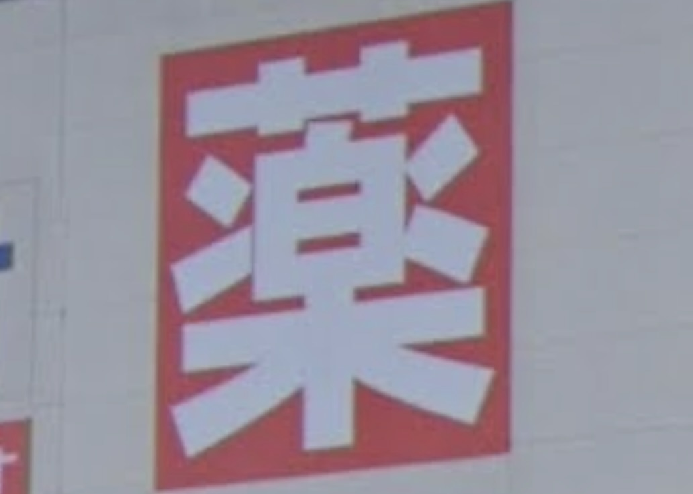

エニタイムフィットネス
この店はジムを経営している店の看板だが、その前提を知らなくても、この看板を見ることで運動・スポーツをする場所だと直感的に分かる。
この店はジムを経営している店の看板だが、その前提を知らなくても、この看板を見ることで運動・スポーツをする場所だと直感的に分かる。

これは上野駅内にあるラーメン屋だが、どんぶりに麺を箸で持っている看板で、一目でラーメン屋だと理解することができる。また、上野駅は外国人観光客が多いため、このような分かりやすい看板にしてると考察する。

赤色の正方形に書かれた「薬」という漢字一文字で表されているシンプルな看板だが、この漢字を知っていれば、ここは薬を扱う店なんだとすぐに理解することができる。